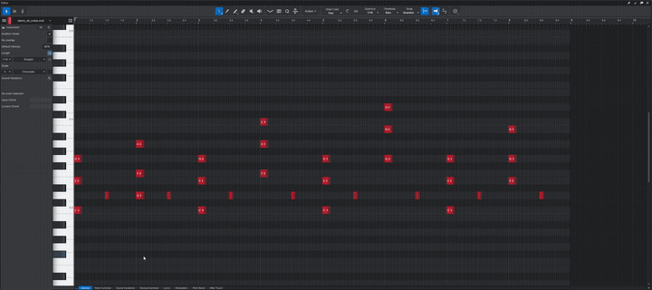
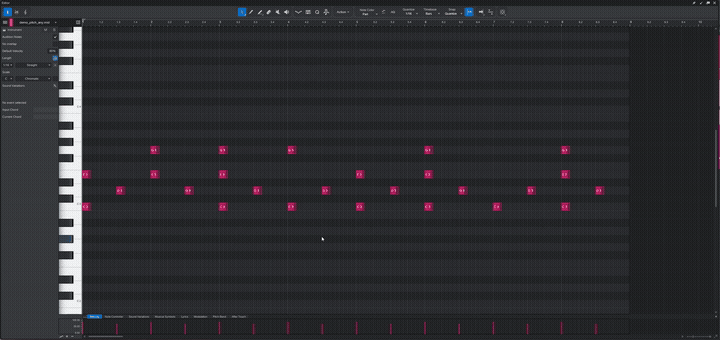
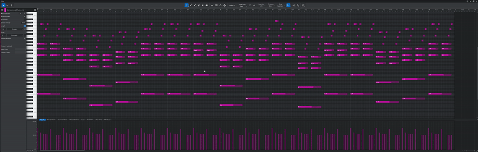

The missing Logic Pro feature — now in Studio One and Fender Studio Pro. One shortcut to select all notes at the same position in every bar.
one-time payment
LAUNCH SALE — SAVE 21%
Instant download. All future updates included.
Buy NowSelect a note — instantly select every note at that same beat position in every bar, regardless of pitch. Just like Logic Pro's Select Equal Subpositions.

Finds every matching pitch at that beat position across all bars. Each pitch is searched independently — if it exists somewhere, it gets selected.

Finds only bars where all selected pitches appear together at that position. Missing even one note — the bar is skipped. Precision tool for surgical MIDI editing.

Quantized anchor positions with smart tolerance. Works perfectly with humanized MIDI up to +/-50 ticks.
Detects 2/4, 3/4, 4/4, 5/4, 6/4, 7/4, 8/4 automatically from the DAW transport.
Works in Bars, Seconds, Samples, and Frames display modes with intelligent fallback detection.
If nothing is found, your original selection is restored. Safe parameter handling on any error.
Select multiple notes on different beats — the script finds all matching positions independently across every bar.
Single .package file installs all three modes. Assign keyboard shortcuts to each in Keyboard Shortcuts settings.
| Host | Windows | macOS Intel | macOS Apple Silicon |
|---|---|---|---|
| Studio One 6 | Tested | Tested | Tested |
| Studio One 7 | Tested | Tested | Tested |
| Fender Studio Pro 8 | Tested | Tested | Tested |
1. Download the .package file after purchase
2. Copy to your Scripts folder:
Windows:
C:\Program Files\PreSonus\Studio One 6\Scripts\
C:\Program Files\PreSonus\Studio One 7\Scripts\
C:\Program Files\Fender\Studio Pro 8\Scripts\
macOS: Right-click .app → Show Package Contents → Contents/Scripts/
/Applications/Studio One 6.app/Contents/Scripts/
/Applications/Studio One 7.app/Contents/Scripts/
/Applications/Fender Studio Pro.app/Contents/Scripts/
3. Restart your DAW
4. Go to Keyboard Shortcuts → search "Select Equal Subpositions" → assign keys
Yes. The script quantizes anchor positions to the nearest sixteenth note grid and uses smart tolerance to catch humanized notes up to +/-50 ticks (Studio One's default humanize range).
The script detects the time signature at the selected note's position. For songs with changes, it works correctly at the current section. Pro tip: Bars display mode gives the best accuracy for non-standard time signatures like 3/4 or 7/4.
All sales are final due to the digital nature of the product. If the script doesn't work as described, email shumilov081299@gmail.com within 14 days with a description of the issue and we'll resolve it.
Yes, all future updates are included with your purchase at no extra cost.
one-time payment
LAUNCH SALE — SAVE 21%
Instant download. All future updates included.
Buy NowTerms of Service · Privacy Policy · Refund Policy · Contact
Denis Shumilov, Ukraine